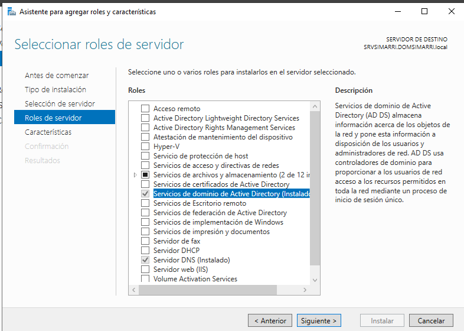
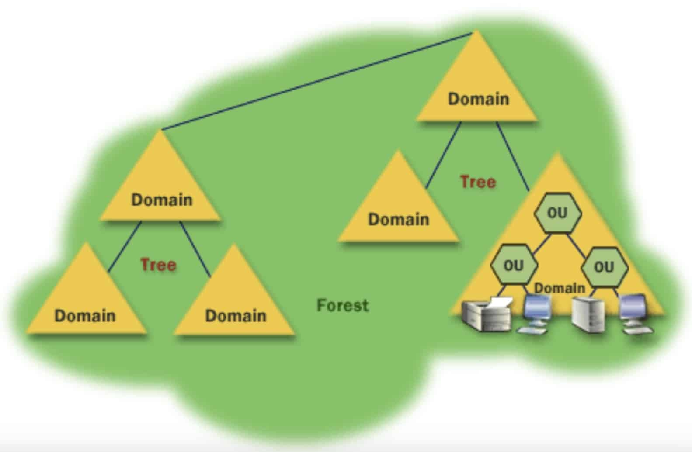
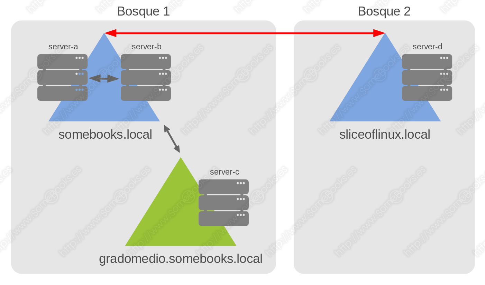

Crear un dominio con Active Directory
El servidor ya tiene nombre, red y salida a Internet. Falta lo que lo convierte en el centro de la red: crear el dominio. Es el momento en el que pasamos de «un Windows con muchas cosas instaladas» a un servidor que decide quién entra en la red y con qué permisos.
Convertir un servidor en controlador de dominio es un proceso en dos fases:
- Instalar el rol Servicios de dominio de Active Directory (AD DS): copia los componentes, pero no cambia nada.
- Promocionar el servidor a controlador de dominio: es el paso que crea el dominio, y reinicia el servidor.
Es un cambio profundo
Tras la promoción, el servidor deja de tener usuarios locales y su cuenta de Administrador se convierte en la del dominio. Haz una instantánea antes.
Conceptos mínimos
| Concepto | Qué es |
|---|---|
| Dominio | Agrupación lógica de usuarios, equipos y recursos con una administración común |
| Controlador de dominio (DC) | Servidor que guarda el directorio y atiende los inicios de sesión |
| Directorio | Base de datos de objetos: usuarios, equipos, grupos, políticas… |
| Bosque | El conjunto de dominios que comparten directorio; el primero que se crea es la «raíz» |
| DNS | Servicio de nombres. Active Directory lo necesita: los clientes encuentran al controlador de dominio preguntando al DNS |
¿Por qué Active Directory depende del DNS?
Cuando un cliente quiere iniciar sesión, pregunta al DNS dónde está el controlador de dominio. Si el DNS no responde bien, el dominio «no existe» para él. Por eso casi todos los problemas de dominio son, en realidad, problemas de DNS.
Nombre del dominio
Cada dominio tiene dos nombres:
| Nombre | Ejemplo | Para qué |
|---|---|---|
| DNS (completo) | techsolutions.lan |
El principal; sigue la notación de DNS, con al menos dos partes |
| NetBIOS (corto) | TECHSOLUTIONS |
Compatibilidad; es el que se escribe en DOMINIO\usuario (máximo 15 caracteres) |
Elegir bien el nombre
- Evita
.local: se reserva para otros usos (mDNS) y puede dar conflictos. - En una empresa real se suele usar un subdominio de un dominio propio registrado (por ejemplo,
ad.empresa.com). - En un laboratorio vale un sufijo que no exista en Internet, como
.lan. - El nombre no se puede cambiar fácilmente después: pénsalo antes.
Antes de promocionar: lista de comprobación
- [ ] El servidor tiene su nombre definitivo (apartado de configuración básica).
- [ ] Tiene IP estática y se ha comprobado la red.
- [ ] La hora y zona horaria son correctas.
- [ ] La contraseña del Administrador local cumple la complejidad, porque pasará a ser la del dominio.
- [ ] Hay una instantánea del servidor.
Instalar el rol AD DS
- Administrador del servidor → Administrar → Agregar roles y características.
- Instalación basada en roles o características, servidor local.
- Marca Servicios de dominio de Active Directory y acepta las características que pida.
- Instalar.


Al terminar, en el Administrador del servidor aparece un triángulo amarillo en la bandera de notificaciones: es el aviso de que falta la configuración posterior.
Promocionar a controlador de dominio
- Clic en la bandera amarilla → Promover este servidor a controlador de dominio.
- Configuración de implementación: elige Agregar un nuevo bosque (porque aún no existe ningún dominio) y escribe el nombre de dominio raíz.
- Opciones del controlador de dominio:
- Nivel funcional del bosque y del dominio: en un entorno nuevo, el más alto compatible con todos los DC (en nuestro caso, Windows Server 2025).
- Marca Servidor DNS y Catálogo global.
- Establece la contraseña del modo de restauración de servicios de directorio (DSRM).
¿Qué es la contraseña DSRM?
Es una contraseña de emergencia para arrancar el controlador de dominio en modo de reparación. Es distinta de la del Administrador del dominio. Guárdala en un sitio seguro: si la pierdes, no podrás reparar el directorio.
- Opciones de DNS: puede aparecer el aviso «No se puede crear una delegación para este servidor DNS». En un dominio nuevo es normal e inofensivo: no hay un DNS superior al que delegar.
- Nombre NetBIOS: acepta el que propone o modifícalo.
- Rutas: carpeta de la base de datos, de los registros y de SYSVOL. En una instalación básica se dejan las que propone. En servidores con varios discos se pueden separar por rendimiento.
- Revisar opciones y comprobación de requisitos previos: debe terminar con «Se han superado todas las comprobaciones». Los avisos amarillos suelen ser tolerables; un error rojo impide continuar.
- Instalar. El servidor se reinicia automáticamente.
Después de la promoción
Al volver a iniciar sesión, el usuario es del dominio: TECHSOLUTIONS\Administrador. La contraseña es la que tenía el Administrador local.
Ajustes imprescindibles de DNS
- El DNS del propio servidor debe ser él mismo. En las propiedades IPv4 del adaptador, pon como servidor DNS su propia IP.
- Reenviadores. El servidor DNS conoce los nombres del dominio, pero no los de Internet. Para que resuelva ambos:
- Administrador del servidor → Herramientas → DNS.
- Clic derecho en el servidor → Propiedades → Reenviadores → Editar.
- Añade un DNS externo (por ejemplo, el del proveedor o
8.8.8.8).
Resultado
Los clientes usarán solo al controlador de dominio como DNS: resuelve los nombres internos él mismo y reenvía los de Internet.
Herramientas nuevas
En Herramientas del Administrador del servidor aparecen ahora, entre otras:
| Herramienta | Para qué |
|---|---|
| Usuarios y equipos de Active Directory | Crear y gestionar usuarios, grupos, equipos y unidades organizativas |
| DNS | Administrar zonas y registros |
| Sitios y servicios de Active Directory | Replicación entre ubicaciones |
| Administración de directivas de grupo | Crear y aplicar directivas |
Comprobar que el dominio funciona
| Comprobación | Cómo | Qué debe verse |
|---|---|---|
| Usuario actual | whoami |
techsolutions\administrador |
| Resolución del dominio | nslookup techsolutions.lan |
La IP del controlador de dominio |
| Salud del controlador | dcdiag /q |
Sin salida: solo muestra los fallos |
| Zona DNS | Herramientas → DNS → Zonas de búsqueda directa | Existe la zona con el nombre del dominio |
Siguiente paso: unir equipos al dominio
Con el dominio creado, el siguiente paso es que los equipos cliente se unan a él. Se explica en el apartado siguiente, Unir un equipo Windows 11 a un dominio.
Instantáneas del controlador de dominio
Con un solo controlador de dominio, restaurar una instantánea funciona. Con varios puede romper la replicación. En un laboratorio con un único DC no es un problema, pero conviene saberlo.
Ampliación: árboles, bosques y confianzas
Estructuras de dominios más complejas
Un dominio puede tener subdominios (ventas.techsolutions.lan). El dominio principal y sus subdominios forman un árbol. Varios árboles independientes forman un bosque.


Para que los usuarios de un dominio accedan a recursos de otro se establecen relaciones de confianza:
| Tipo | Entre qué |
|---|---|
| Transitivas | Dominios del mismo bosque (automáticas) |
| Externas | Dominios de bosques distintos |
| De bosque | Dos bosques completos |
| De reino | Un dominio de Windows y un dominio Kerberos que no es de Windows |


En este módulo trabajamos con un único dominio, que es lo más habitual en una pyme.
Errores típicos
| Síntoma | Causa probable | Solución |
|---|---|---|
| La promoción falla en los requisitos previos | Contraseña del administrador local débil o nombre no válido | Cambiar la contraseña o el nombre |
| Aviso de delegación DNS | Normal en un dominio nuevo | Ignorarlo |
| Los clientes no salen a Internet tras crear el dominio | Falta el reenviador en el DNS | Añadir un reenviador |
Lista de comprobación
- [ ] El servidor es controlador de dominio y entras con
DOMINIO\Administrador. - [ ] El DNS del servidor es él mismo y tiene reenviadores.
- [ ]
nslookupdel dominio devuelve la IP del controlador. - [ ] Hay una instantánea del dominio recién creado.
Con PowerShell (opcional)
Para alumnado más avanzado
Todo el proceso se puede hacer por consola. No es necesario para seguir el módulo.
| Tarea | Comando |
|---|---|
| Instalar el rol AD DS | Install-WindowsFeature AD-Domain-Services -IncludeManagementTools |
| Crear el bosque y el dominio | Install-ADDSForest -DomainName "techsolutions.lan" -DomainNetbiosName "TECHSOLUTIONS" -InstallDns |
| Ver los datos del dominio | Get-ADDomain |
| Ver los controladores | Get-ADDomainController |
| Degradar un controlador | Uninstall-ADDSDomainController |
Si no se indica -SafeModeAdministratorPassword, el comando pide la contraseña DSRM por pantalla, sin dejarla escrita.
Preguntas de lectura
- ¿Por qué no es buena idea escribir la contraseña DSRM dentro de un script?
- ¿Qué dos parámetros del comando de creación del bosque corresponden a los dos nombres del dominio?
Niveles funcionales
Para fijarlos por comando hay que usar los parámetros -ForestMode y -DomainMode con el valor de la versión elegida. Consulta los valores exactos con Get-Help Install-ADDSForest -Parameter ForestMode.
Resumen
- Crear un dominio son dos fases: instalar el rol AD DS y promocionar el servidor.
- Active Directory depende del DNS: casi todos los problemas de dominio son de DNS.
- Tras la promoción: el servidor usa su propia IP como DNS y se configura un reenviador para Internet.
- Los clientes se unen al dominio en el apartado siguiente: necesitan Windows 11 Pro/Enterprise/Education y DNS = controlador.